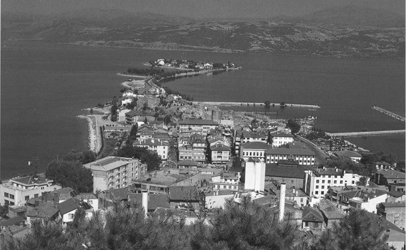
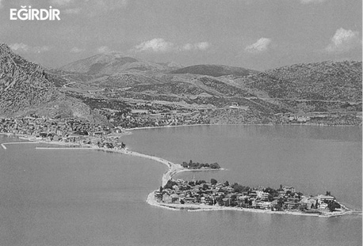
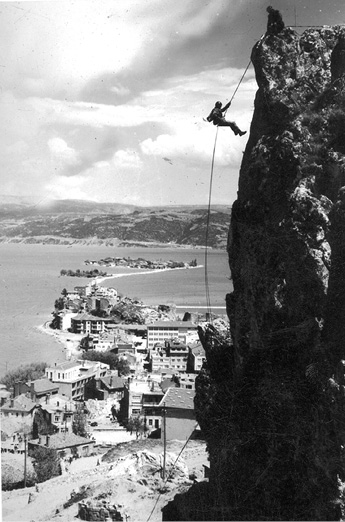
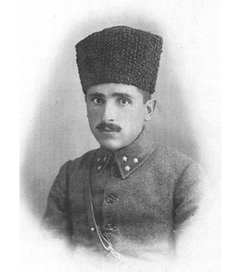
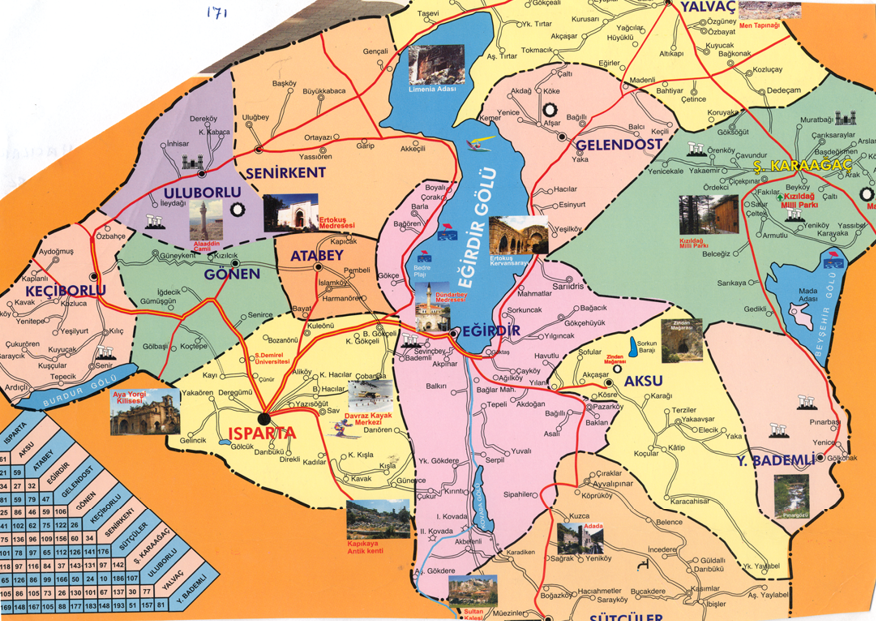

Eğirdir’in İsmi ve Tarihî Mekânları
Eğirdir İsminin Efsanesi
Zamanın birinde Eğirdir’de yaşayan bir bey, eşi ve çocuklarıyla birlikte Sivri Dağı eteklerinde avlanmaya çıkar. Bey orada bir geyik görür, okunu gerer ve geyiğe atar. Ancak ok geyiğe değil, arkada bulunan kayaya saplanır. İşte tam bu noktadan sular fışkırmaya ve çoğalarak akmaya başlar. Beyin çocuğu bu suya kapılır ve boğularak ölür.
Bey hanımının yanına feryat ederek koşar ve çocuğun boğularak öldüğünü bildirir. Hanım dalmış, elindeki tenkerekiyle yün eğirmektedir. Bey daha da bir isyankâr tavırla;
“Hanım, hanım çocuğu su aldı götürdü, sen hâlâ elindekini eğirir durursun, ‘Eğir dur!’ bakalım.” der. Böylece Eğirdir ismi ilk defa söylenmiş ve bu yöreye verilmiş bir isim olarak kalmıştır.
Tarihi, Kültürel ve Arkeolojik Varlıklar
Prostanna: Psidia şehirlerinden bir tanesidir. Eğirdir Sivrisi’nin arkasında Camili Yayla üzerindedir. Şehrin kesin yeri L. Robert tarafından, Bedre Köyü’nün yukarısındaki Yazılıkaya’da bulunan bir sınır yazıtı ile tespit edilmiştir. Bu yazıt Prostanna ile Parlais’in sınır yazıtı idi. Antik kentte sınır duvarları ve bazı bina temelleri vardır. Şehrin Akropolisi 200 metre yükseklikte kurulmuştur. Sur duvarları içerisinde dikdörtgen şeklinde bir m. ö. 1. yüzyıldan itibaren sikke basmaya başlamıştır. Bina vardır. Bu bina bir tapınaktır. Diğer üç bina ise, halka ait binalardır. Bizans devrine ait hiçbir kalıntı yoktur.
Parlais (Barla): Roma kolonisi olarak kurulmuştur. Diğer koloni şehirlerin en küçüğüdür. Bugünkü Barla’dadır. Görünürde herhangi bir kalıntısı yoktur. Parlais, Maecus Aurelius döneminden, Caracalla dönemine kadar m.ö. 1. yüzyıldan itibaren sikke basmıştır. M.ö. 25 yılında Galatya Eyaleti’ne dahil edilen şehrin adı “Colonia Julia Augusta Parlais”tir.
Ayastefanos Kilisesi: Eğirdir’in Yeşilada (Nis) mahallesinde yer alır. Dış duvarları moloz taştır. Çatı ve iç mekân sütunları ahşaptır. 19. yüzyılda inşa edilmiş olup, 1998 yılında restore edilmiştir.
Ayagiorgios Kilisesi: Eğirdir ilçesi Barla Bucağı’nda dağın yamacında yer alır. Dikdörtgen plânlı olup, moloz taşlarla 1805 yılında yapılmıştır. Kilisenin çatısı yıkılmış olup, duvarlarının bir kısmı ayaktadır.
Eğirdir Kalesi: Eğirdir ilçesinde göle doğru uzanan yarımada üzerinde iç ve dış kale vardır. Dış kalenin yalnız temelleri kalmıştır. Kesin yapılış tarihi bilinmemekle birlikte m. ö. 4. yüzyılda yapıldığı tahmin edilmektedir. Roma ve Bizans döneminde çeşitli tamirler görmüştür. Dış, kaplama taş bloklar; iç kısmı ise moloz dolgudur. En son Hamidoğulları devrinde tamir edilmiş ve Timur’un Eğirdir’i istilası sırasında tahrip edilmiştir. Eğirdir’in bundan sonraki dönemlerde savunmaya fazla ihtiyacı olmadığından kale tamir edilmemiştir.

Eğirdir Kazası’nın genel bir görünüşü.

Eğirdir Gölü ve önceleri ada iken bugün yarımada şeklini alan
“Can ve Nis Yarımadaları”. Dünyanın ilk ve en büyük kadınlar manastırı Nis’de kurulmuştur. Nis’de 1930’lu yıllarda Haşir Risalesi ve Nurlar’ın bazı parçaları saklanmıştı.

Can ve Nis Yarımadalarının farklı bir görünümü.
Yüzbaşı İbrahim Hulusi Yahyagil, 1928’de Eğirdir Dağ Tâlimgâhı’na-Komando okuluna tayin olmuştu. Ama bu Nur Yüzbaşı’yı, 1929 baharında Barla’daki Nur Tâlimgâhı’na ilk talebe olarak tayin etmiş ilahi kader!..

Yüzbaşı İbrahim Hulusi Yahyagil:
Risale-i Nur’un İlk Talebesi!, Bediüzzaman’ın İlk Muhatabı!,
Barla’da Birinci Nur Talebesi!,
Mektubat’ı Suâlleriyle Yazdıran Yüzbaşı!
(1924’te çekilmiştir.)
Hızır Bey Camii: Eğirdir’de bulunan camilerin en büyüğü olup, duvarları kâğin ve üstü toprak dam olarak ilk defa Hızır Bey tarafından yaptırılmıştır. Kesin tarihi bilinmemekle birlikte 1327-1328 yıllarında inşa edildiği sanılmaktadır. Böcüzade, Isparta Tarihi isimli kitabında II. Gıyaseddin Keyhüsrev tarafından yaptırıldığını ve Hızırbey’in de bu camii tamir ettirmiş olabileceğini ileri sürmektedir.
Cami, 1814 yılında çıkan bir yangında tamamen yanmış, Yılanlıoğlu Şeyh Ali Ağa’nın önderliğiyle yeniden yaptırılmıştır. 1820 yılında tekrar ibadete açılmıştır. 1878 ve 1884 tarihlerinde tekrar onarım gören camiin damı Burhanoğlu Hacı Murat Ağa tarafından kiremitle örtülmüştür. Cumhuriyet döneminde Vakıflar Genel Müdürlüğü tarafından bugünkü durumuna getirilmiştir. Büyüklüğü, tarihî önemi, minberinin yapısı bakımından büyük bir kültür varlığıdır. Ayrıca kemer üzerinde yapılan minaresiyle dünyada tek olduğu iddia edilmektedir.
Dündar Bey Medresesi: Eğirdir ilçesinin en merkezî yerinde bulunan, taş medrese adıyla da anılan bina, 1237 yılında Selçuklu sultanı II. Gıyaseddin Keyhüsrev zamanında han olarak yapılmıştır. Daha sonra 1301 yılında Hamidoğlu Dündar Bey tarafından Medrese hâline getirilmiştir. Medrese iki katlı olup, ortada avlu yer alır ve 30 hücresi vardır.
Medresenin girişinde büyük bir taç kapı vardır. Kapının etrafı Selçuklu mimarisine uygun olarak geometrik şekillerle süslenmiştir. Yapının malzemeleri yakındaki Eğirdir kervansarayından sökülerek getirilmiş ye medresede kullanılmıştır.
Dündar Bey Medresesi bugün kapalı çarşı olarak kullanılmaktadır.
Ağa Camii: İlçenin Ağa Mahallesi’nde bulunan cami, 1413 yılında inşa edilmiştir. 1712 yılında yapılan camiin damı daha sonra onarılarak kiremitli hale getirilmiştir.
Yılanlıoğlu Camii: Yazla Mahallesi’nde Şeyhü’l-İslâm el-Berdai Türbesi yanında, Yılanlıoğlu tarafından 1806 yılında taş minareli olarak yaptırılmıştır. Cami, Vakıflar Genel Müdürlüğü’nce onarılmış ve bugünkü durumuna kavuşmuştur.
Yeşilada Camii: Yeşilada (Nis Adası) içinde yer alan cami, önce kilise olarak inşa edilmiş. II. Osman’ın 1618 yılında çıkardığı bir fermanla ibadete açılmıştır. İlk adı Kız Kilisesi’dir.
Kale Camii: Kale Mahallesi’nde, mescidden camie çevrilmiş bir yapıdır. İnşa tarihi bilinmemektedir.
Sinan Paşa Camii: Yan duvarları kâgir, üzeri ahşap ve toprak damlı olarak inşa edilmiştir. Minaresi renkli tuğladan yapılmıştır. Kapısı üzerindeki kitâbede, 1376 tarihinde yapıldığı kayıtlıdır. Buna göre camiin, Isparta ve havalisi Osmanlı idaresine geçmeden 6 yıl önce yapıldığı anlaşılmaktadır. Kapının içerisinde sol tarafta gömülü bulunan bir kişinin mezar taşında Hâfız Tuti-i Karamanî ibaresi ve 1392 tarihi görülmektedir.
Cami, 1878 yılında onarılarak damı kiremitli hâle getirilmiştir. Cumhuriyet döneminde Vakıflar Genel Müdürlüğü’nce onarılan cami, bugünkü durumuna kavuşmuştur.
Baba Sultan Türbesi: Baba Sultan Türbesi, kapısındaki kitâbeden anlaşıldığına göre Hamidoğlu İlyas Bey zamanında, 1358 yılında İsa Bin Musa adındaki zât için yaptırılmıştır. Türbe içinde Baba Sultan’dan başka, türbedarı olan Suretî Baba (Zorti Baba) ile Palaz Baba adlarında iki kişinin mezarı daha vardır. Son zamanlara kadar Sakahâne tabir edilen su soğutma yeri vardı. Burada bulunan küplerden sabah vakitleri gelip geçenler içebilirdi. Bugün bunlar kalmamıştır. Türbe ziyarete açıktır.
Eğirdir Kervansarayı: Eğirdir ilçesi, Yeni Mahalle’de 4 pafta, 14 ada, 6 parselde yer alır. Anadolu Selçuklu kervansaraylarının en büyüklerindendir. Konya-Antalya kervan yolunda yer alan han, doğu- batı doğrultusundadır. Avlu ve kapalı mekân olmak üzere iki kısımdan meydana gelmiştir. Her iki bölümde de örtü tamamen yıkılmış ve günümüzde hiçbir iz kalmamıştır.
Avlunun doğu duvarı tamamen yok olmuştur. Avluda birkaç yolcu odasının temel izleri kalmıştır. Kervansaray 1237 yılında yapılmış ve portali yerinden sökülerek Dündar Bey Medresesi’ne 1301 yılında taşınmıştır.
Pisidia Antik Kenti Su Kemerleri
Antiocheia Antik Kenti: Antiocheia Yalvaç ilçesinin 1 km. kuzeyinde ve Sultan Dağları’nın güney yamaçları boyunca uzanan verimli arazide kurulmuş bir Pisidia kentidir. Antiocheia bir Seleukos kolonisidir. Kesin kuruluş tarihi bilinmemektedir. Şehir Selevkos veya oğlu Antiokhos tarafından kurulmuştur. Büyük Antiokhos’la Apamenia barış görüşmeleri sırasında (m.ö. 190-188) Antiocheia Magnesi’a ad Meandr’dan getirilen kolonistler tarafından kolonize edilmiş ve kente Romalılar bağımsızlık vermişlerdir. Kent bu durumunu Amyantas’ın idaresinin altına girinceye kadar korumuştur. M.ö. 39-36 yılları arasında bir tarihte Amyantas’ın idaresi altına giren Antiocheia onun m.ö. 25’de öldürülmesi ile bölgenin bütün şehirleri gibi Galatya eyaletine dahil edilmiştir. Şehirde 30-40 bin kişinin yaşadığı tahmin edilmektedir. Antiocheia bir tepe üzerine kurulu etrafı sur duvarları ile çevrili olup, günümüzde kısmen ayakta olan ve temel kalıntıları mevcut surların uzunluğu 2920 m.’yi bulmaktadır. Kentin başlıca karakteristik yapıları; Augustus Tapınağı, Propylon (Giriş Kapısı), Tiyatro, Roma Hamamı, Stadyum, St. Paul Kilisesi, Nimfeum (Anıtsal Çeşme) ve Su Kemerleridir. Hristiyanlığın önemli dinî merkezlerinden birisi olan kentte St. Paul adına yapılmış ilk kiliselerden birisi bulunmaktadır. St. Paul ve Barnabas, Hristiyanlığı yaymak üzere ilk vaazlarını burada vermişlerdir. Daha sonra St. Paul Anadolu’ya iki seyahatinde de Atiocheia’ya uğramıştır. Bu da kentin Hristiyanlık âlemi için önemini göstermektedir.
İnanç Turizmi
Aya Payana Kilisesi: Isparta merkez Turan mahallesindedir. 1750 yılında yapıldığı tahmin edilmektedir. Dikdörtgen plânlı, üç nefli ve apsislidir. Kuzeybatı ve doğudan birer giriş kapısı vardır. Çatı ahşap ve çapraz tonozludur. Ahşap üzerleri alçı ile sıvanmıştır. Kilise Turizm Bakanlığınca yenileme kapsamına alınmış olup, çevre tanzimi ve onarım işleri yapılmıştır. Kilise’nin barok stilindeki ahşap malzemeleri müze deposunda saklanmaktadır.
Aya Yorgi Kilisesi: Isparta merkez Dağancı Mahallesi’ndedir. Yapım tarihi 1858’dir. Bununla ilgili yazıt, ana nef girişindedir. Bugün yazıt Isparta Müzesi’ndedir. Yapı doğu-batı yönünde narteksli ve üç neflidir. Dış duvarlar yerel taş kövke ile yapılmıştır. Batı, kuzey ve güneyden birer giriş kapısı vardır. Kuzey giriş üzerinde dışarı taşkın ve iki sütun üzerine oturan yağmurluk vardır. Yapının çatısı çapraz tonozlarla ve kövke ile örülmüştür.
Neflerin yükseltisi çatıda izlenir, üçgen almaklarla yuvarlak ve dikdörtgen pencereler yer alır. Narteks girişi üzerinde çan kulesi yer alır. Kilisenin Turizm Bakanlığı’ndan sağlanan ödenekle 1998 yılında çevre düzenlemesi yapılmış olup, gelecek yıllarda restorasyonu plânlanmaktadır.
Ayastefanos Kilisesi: Eğirdir ilçesinin Yeşilada mahallesinde yer alır. Dış duvarları moloz taştır. Çatı ve iç mekân sütunları ahşaptır. 19. yüzyılda inşa edilmiş olup Eğirdir Belediyesi’nce 1993 yılında yenileme çalışmaları yapılmıştır.
Ancak, –İncil kayıtlarına rağmen– gerek Hristiyan camiaya tam olarak tanıtılmadığı için ve gerekse çeşitli sebeplerle göz ardı edilen Kutsal Anadolu Toprakları, bilinenin tersine:
1. Tarihte ilk kez Hristiyanlık isminin ortaya çıktığı yer.
2. Aziz Luka’nın doğduğu yer. (Antakya)
3. Aziz Pavlus’un doğduğu yer. (Tarsus)
4. Aziz Pavlus’un ilk resmî vaazını verdiği yer. (Yalvaç)
5. Aziz Pavlus’un ilk yolculuklarını yaptığı yer. (Anadolu)
6. İlk kadın manastırlarının bulunduğu yer. (Eğirdir-Nis Adası)
7. İlk Hristiyan kiliselerinin bulunduğu yer. (Anadolu)
8. İncil’de kaydedilen kiliselerin çoğunun bulunduğu yer. (Anadolu)
9. Dünya’nın yaratılışında ve Tevrat’ta geçen ilk toprakların bulunduğu, peygamberlerin yaşadığı yer. (Anadolu)
10. Çeşitli sebeplerle yer değiştirilmesine rağmen, dünya tarihinin büyük bir bölümünü hâlen üzerinde bulunduran tek kutsal topraklar, Anadolu’dadır.
Eğirdir’in Tarihçesi
Eğirdir ve çevresinin Arzava Krallığı (m.ö. 2000-1200) döneminden beri meskûn olduğu, buluntulardan ve kayıtlardan anlaşılmaktadır. Eğirdir Gölü güney ucu merkez olmak üzere Burdur Gölü’ne kadar olan bölgeye, İlkçağ’da Askania adı verildiği sanılmaktadır. Eğirdir Gölü’nün güney ucu kıyıları kuşkusuz bölgedeki ilk kentçiklerden birinin ya da birkaçının yeriydi. Bu yöreye Luwi uygarlığı çağında Askawana, yani “Ada Ülkesi” adı verilmiştir.
Yöre, Arzava Krallığı’ndan sonra m.ö. 1200 yıllarında Frigyalılar’ın egemenliğine girdi. Daha sonra m. ö. 687-547 yılları arasında Lidyalılar tarafından işgal edildi. Eğirdir kentinin, Lidya’nın son hükümdarı Kroisos (b.ö. 560-547) tarafından kurulduğu ve ilk adının da “Krozos” olduğu sanılmaktadır. Şehrin iç kalesi de Lidyalılar tarafından inşa edilmiştir.
Eğirdir, m.ö. 540 yılında Pers imparatorluğu tarafından zaptedilmiş, yaklaşık 200 sene adı geçen imparatorluğun egemenliğinde kalmış, daha sonra Seleukos egemenliği altına girmiştir. Yöre, Seleukoslar tarafından m.ö. 188 yılında Apamea (Dinar) antlaşmasıyla Romalılara bırakılmıştır. Roma döneminde “Prostanna” adıyla anıldığı görülmektedir. Prostanna, bugünkü şehrin güneybatı kısmında, Camili Yayla’da yer alıyordu. Kent, Ptolemaios’da, Orta Pisidia’da Hierocles’te, Timbriada (Mirahor) ile Konane (Gönen) arasında gösterilmektedir.
Prostanna’nın m.ö. 1. yüzyıldan itibaren görülmeye başlayan ve m.s. 214’e kadar basıldığı bilinen sikkelerinde, bugün Eğirdir Sivrisi olarak bilinen Viarus Dağı’nın kabartması yer alıyordu. Prostanna ile ilgili en eski belge, Asia eyaletlerinden bir quaestor propraetor şerefine dikilen ve m.ö. 113 yılına tarihlenen bir kitâbedir.
Roma dönemine ait olan ve Eğirdir’in Bedre Köyü yakınında bulunan bir sınır taşı da Parlais ile Prostanna arasındaki sınırı belirlemektedir. Prostanna, Limnai (Hoyran) ile birlikte Hristiyanlığın önemli merkezleriydi. 381 yılından sonra her iki piskoposluk birleştirilmiştir.
Eğirdir ve çevresinde 395’te Bizans’ın egemenliğine girmesinden sonra şehrin Ortaçağ’da “Akroterion” şeklinde isimlendirildiği görülmektedir. Akroterion, Hellen dilinde herhangi bir nesnenin en uçtaki ya da en üstteki bölümünü anlatır. Kentin böyle adlandırılması, arkasındaki Eğirdir Sivrisi’nin tüm yörede göze çarpan doruğundan kaynaklanıyordu. Bizans egemenliğinin son dönemlerinde, şehrin adı, “Akrotiri” olarak geçiyordu. Eğirdir, Bizans’ın Anatolikon Theması sınırına dâhildi.
Yöredeki ilk Türk yerleşiminin 1071’den birkaç yıl sonra gerçekleştiği sanılmaktadır. 1097 Dorilaion (Eskişehir) Savaşı’ndan sonra Türk boyları, –Haçlı-Bizans baskısı altında- Anadolu içlerine çekilmişlerse de kısa bir süre sonra, Miryakefalon Zaferi’yle (1176) yeniden çevreye yerleşmeye başlamışlardı. Anadolu Selçuklu hükümdarı III. Kılıçarslan, 1204 yılında çevredeki şehirlerle birlikte Eğirdir’i de Selçuklu egemenliği altına aldı. Selçuklu sultanlarının doğal güzellikleri sebebiyle yaklaşık olarak 75 yıl sayfiye şehri olarak kullandıkları Eğirdir’in, bu dönemde “Cennet-âbad” olarak isimlendirildiği bilinmektedir.
Anadolu Selçuklu Devleti’nin sona ermesinden sonra Teke Türkmenleri’nin İğdir boyuna mensup olan “Felekeddin Dündar Bey, Hamidoğullan Beyliği’ni kurdu ve önce Uluborlu’yu, daha sonra 1310 yılında Eğirdir’i beylik merkezi yaptı. Eğirdir, 1324-1327 arasındaki 3 yıllık İlhanlı egemenliği dönemi hariç tutulacak olursa, 1391 yılına kadar 78 yıl süreyle Hamidoğullan Beyliği’nin başkenti olmuştur.
Hamidoğulları Dönemi’nde Eğirdir’e “ahi” kültürü hâkimdir. İbni Batuta’ya göre, şehrin çok nüfuslu olması, güzel çarşı ve pazarlarının bulunması, iyi sulanmış meyve bahçeleriyle çevrili olması ve buraya gelen yolların kolay savunulabilmesi sayesinde Hamidoğulları Dönemi’nde Eğirdir, parlak bir dönem yaşanmıştır.
Hamidoğulları Beyliği’nin sona ermesi ile Eğirdir, Osmanlı egemenliğine geçti. Osmanlılar’ın ilk egemenlik dönemi çok kısa sürdü. Timur, Ankara Savaşı’ndan sonra Anadolu’yu istilası sırasında Eğirdir’e gelerek kendisine boyun eğmeyen şehri ve halkın sığındığı Nis Adası’nı kuşatarak zaptetti. Bölgeyi 1402 yılında Karamanoğlu II. Mehmet Bey’e verdi. 1415 yılında tekrar Osmanlı egemenliğine giren yöre, kısa bir süre sonra yeniden Karamanoğlu egemenliğine geçti. Bu dönemde Karamanoğlu II. Alaaaddin Ali Bey zamanında şehirde basılan sikkelerde “Eğirdir” adının kullanılmış olduğu dikkati çekmektedir.
Osmanlı egemenliği döneminde yörenin devlet sınırlarından uzak kalması, savunma ihtiyacını ortadan kaldırmıştır. Bu dönemde şehrin surları onarım görmemiş, yıkılmaya yüz tutmuş, beylik dönemindeki canlı hayat sönmeye başlamıştır.
Osmanlı Dönemi’nde (1402, 1501, 1522, 1568 yıllarında) yapılan tahrirlerin yer aldığı defterlerde ve Kâtip Çelebi’nin “Cihannüma” isimli esirinde; Eğirdir, Hamid Sancağı’nın kazaları arasında görülmektedir. Bu dönemde Eğirdir, Hamid ilinin kalesinde “Hisar Erleri” bulunan, surlarla çevrili tek şehridir. Bu surlar, 17. yüzyılda hatta 18. yüzyılın başlarında Fransız seyyah Paul Lucas’ın belirttiğine göre hâlâ sağlamdı.
Osmanlılar döneminde zaman zaman Hamid Sancağı’nın merkezi olan Eğirdir, Tanzimat’tan sonra Konya Vilayeti Hamit Sancağı’na bağlı bir ilçe merkezi oldu. Eğirdir Türkiye Cumhuriyeti’nin kuruluşundan sonra da Osmanlı Devleti zamanındaki ilçe statüsünü sürdürmüştür. 1899 ve 1914 yıllarında Isparta yöresinde meydana gelen şiddetli deprem, Eğirdir’de büyük bir tahribat oluşturmamıştır. Cumhuriyet Dönemi’nde Eğirdir’de meydana gelen büyük olaylardan birisi de 4 Mayıs 1959’daki büyük yangındır. Bu yangından sonra Eğirdir yeni baştan imar edildi.
***
Barla’nın çevresindeki beldeler:
İslâmköy, Ak Keçili, Akdağ, Akçaşar, Bahtiyar, Hacılar, Sarı İdris, Mahmutlar, Akpınar, Akdoğan, Aliköy, Ak Belenli, Müezzinler, Sofular, Hacı Ahmed’ler...
İslâmiyet; ismiyle, cismiyle, resmiyle, ve de nuruyla vatanımız sevgili Anadolu’nun taşını toprağını silmiştir.

Nurlar’ın ve Nur Havârîleri’nin Beldeleri